A Day Inside a Modern Refinery
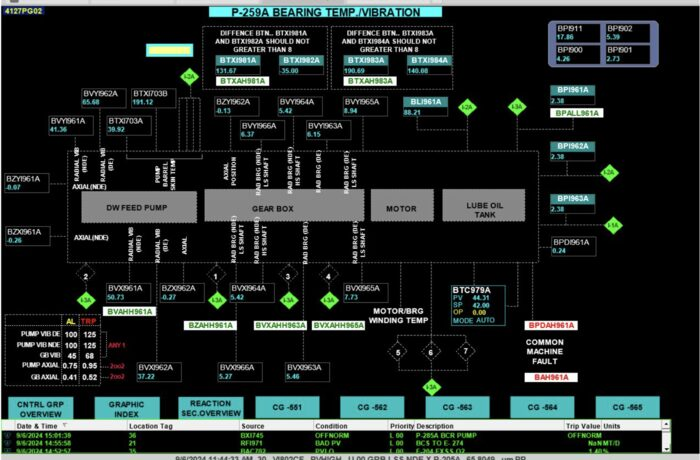
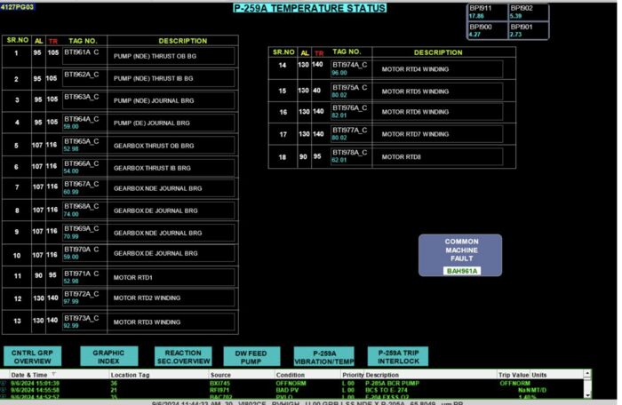
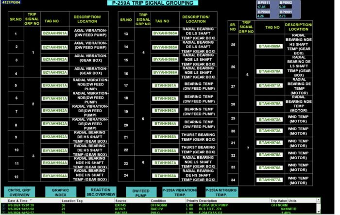
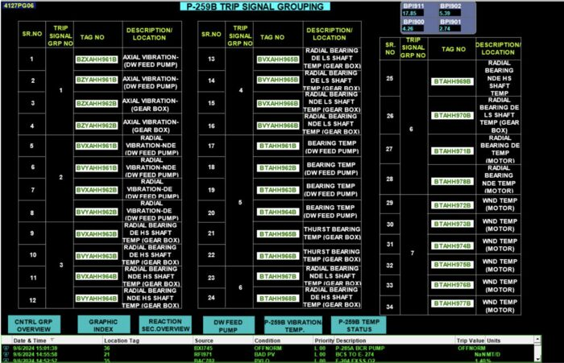
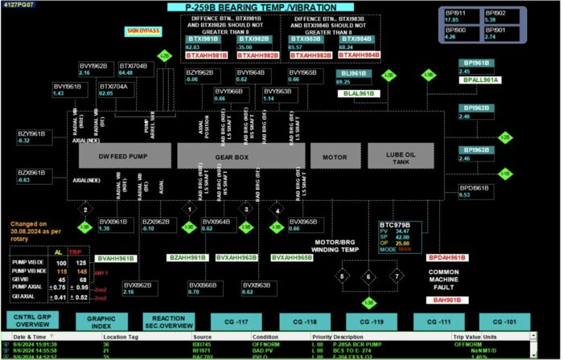
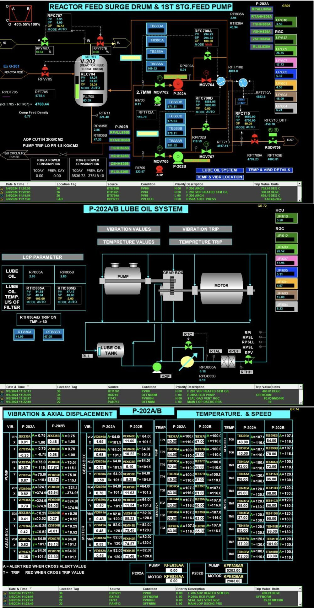
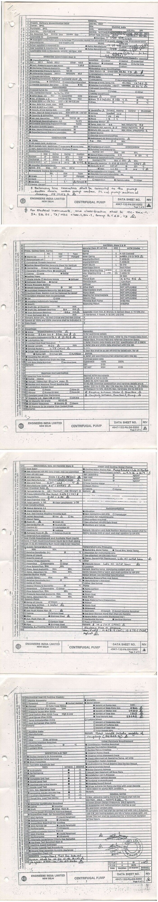
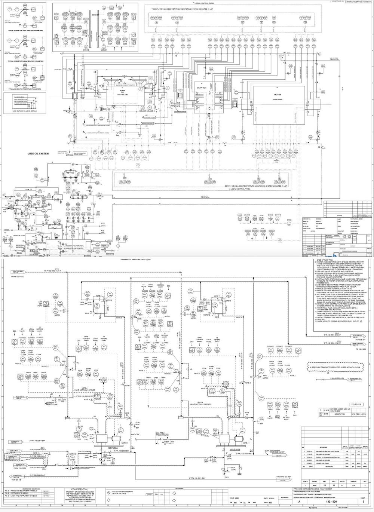
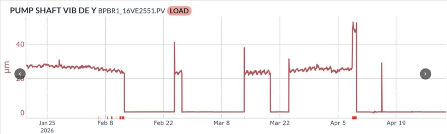
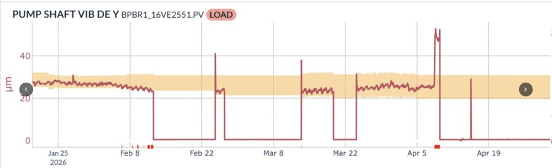
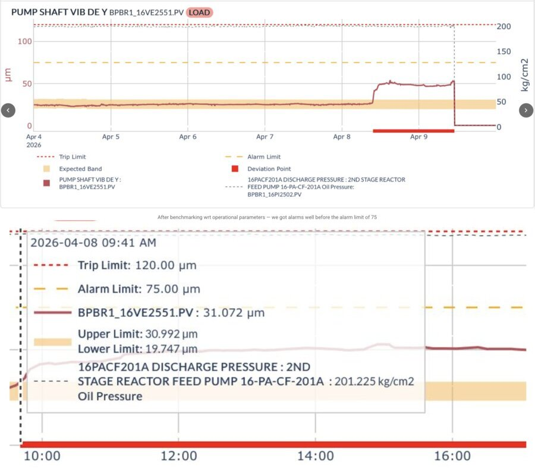
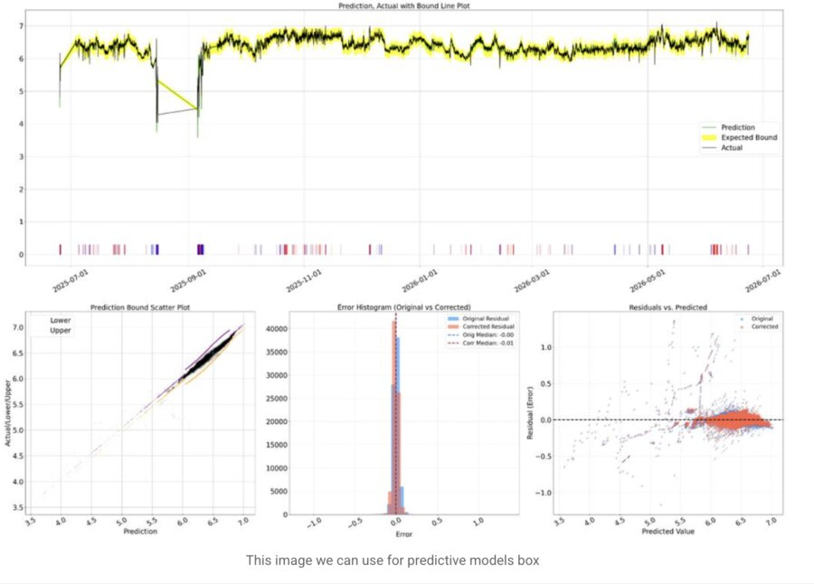
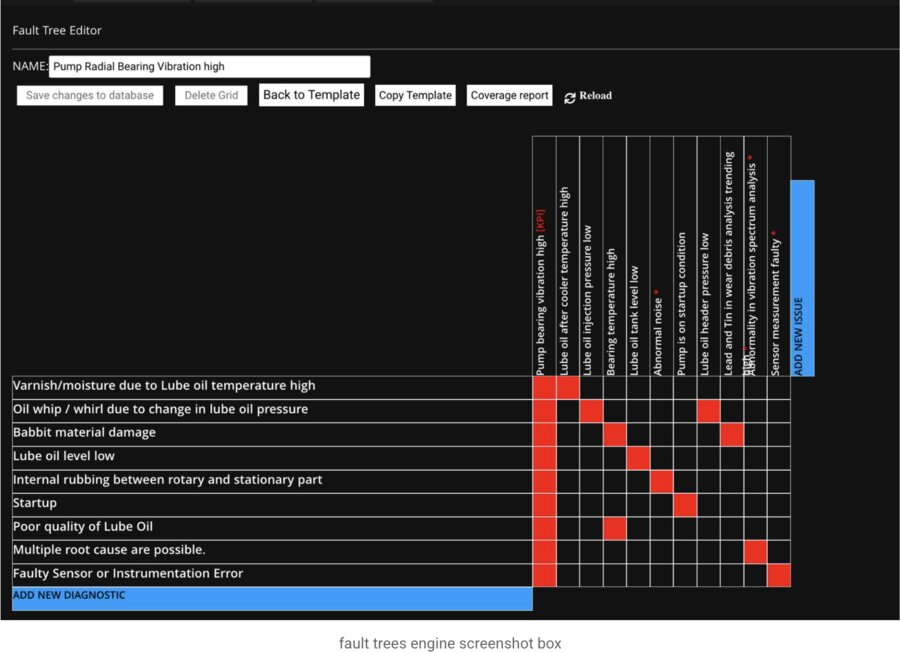
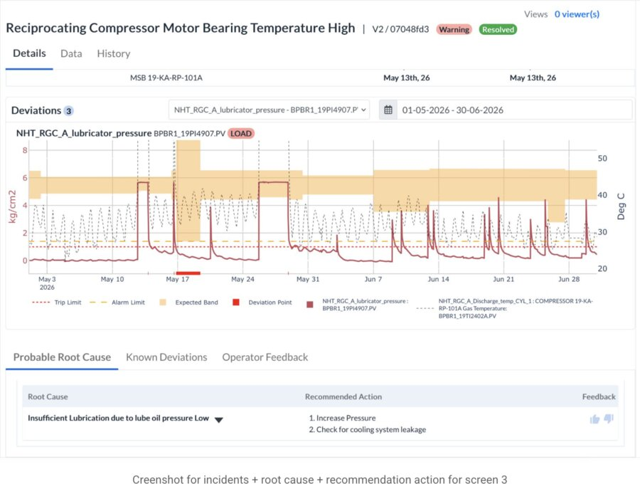
Most hours pass without incident. Assets run inside their expected range, and the plant hums along — calm, steady, unremarkable. That calm is the baseline every story is measured against.
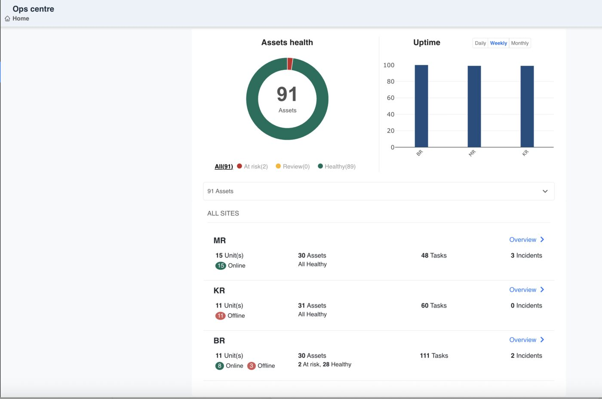
Nothing alarms. Nothing trips. But the lube oil temperature has quietly stepped away from its usual baseline.
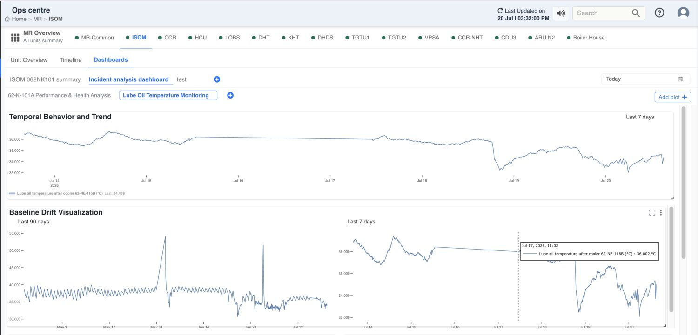
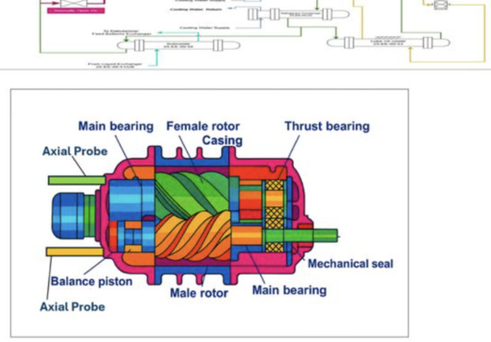
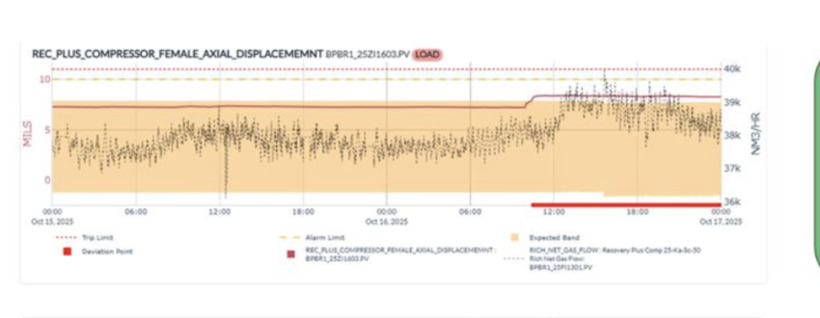
IVP-101A · VGOHDT Feed Pump
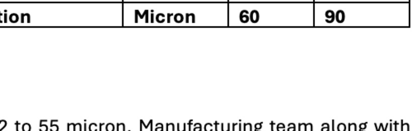
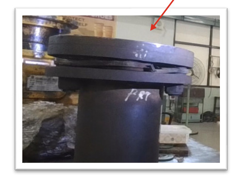
Early awareness changes the shape of the whole day — not just the moment of the alarm.
Not in a single alarm, but in a trend line that keeps pointing the right way — illustrative view from Pulse's management dashboard.
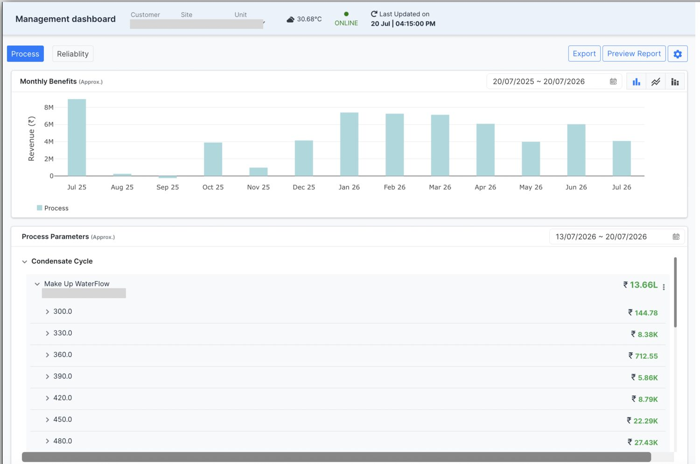
A direction we're exploring: asking a question in plain language, and getting an answer grounded in the plant's own data.